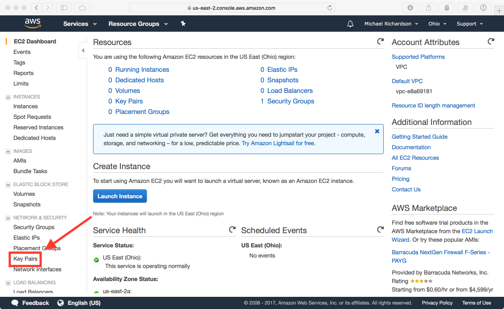
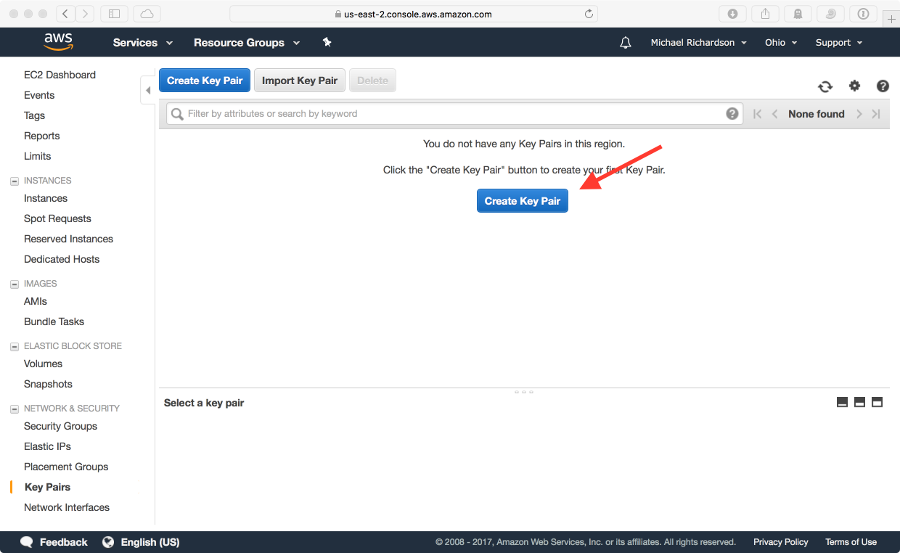
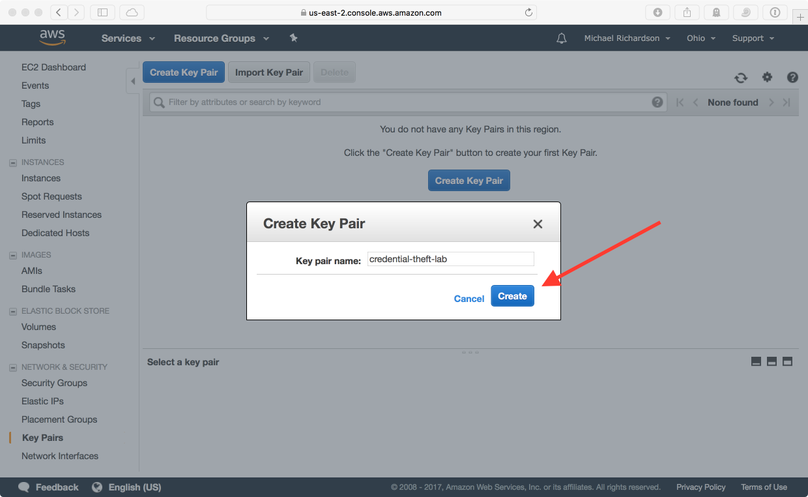
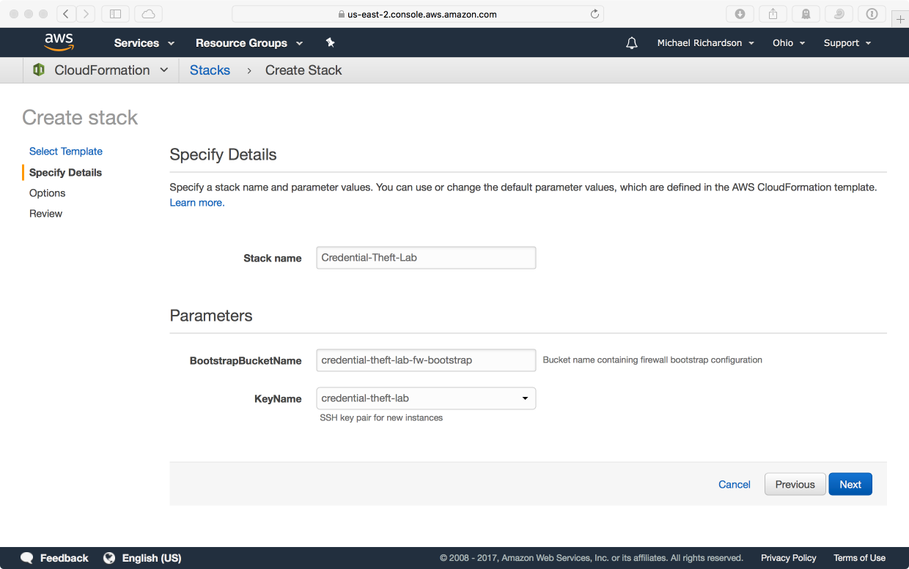
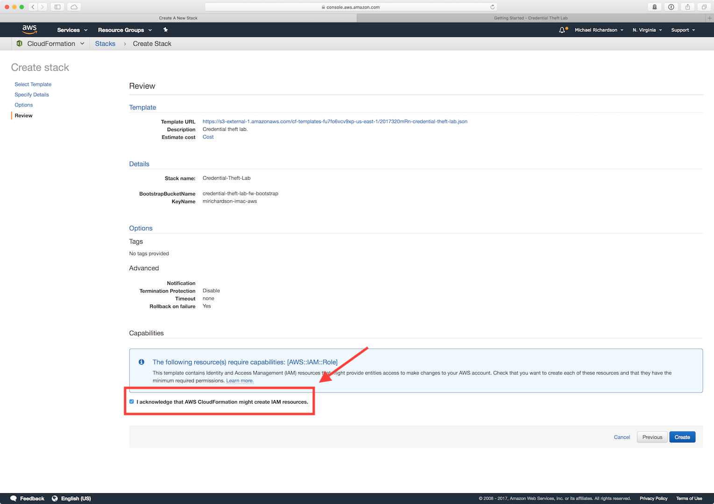
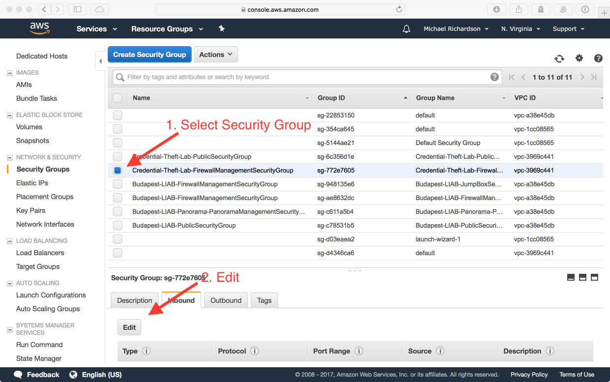
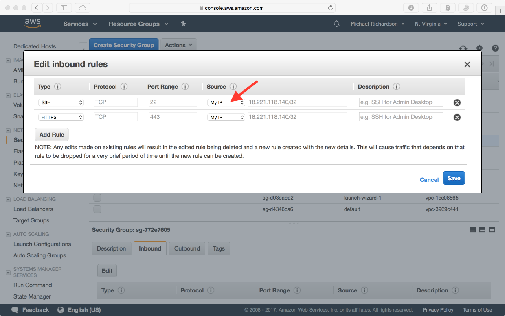
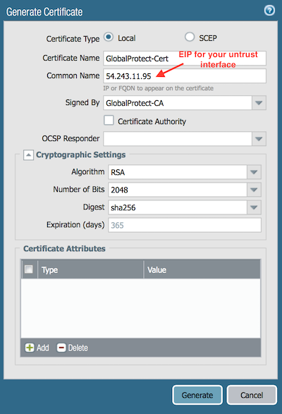
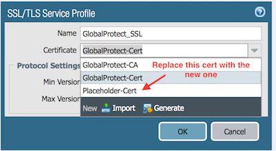
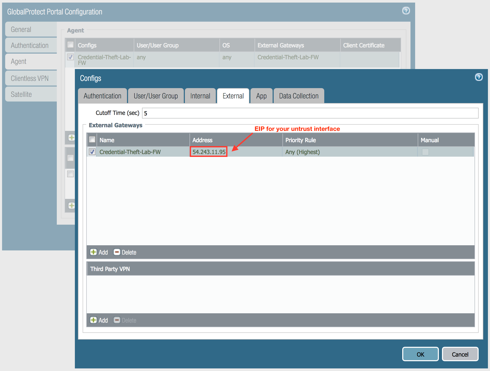

Getting Started
EC2 Key Pair Creation
If you've never used AWS before, you will need to create a SSH key pair that will be used for the initial login to EC2 instances. If you've already got an SSH key pair that you would like to use in your desired region, feel free to skip this step.

In the EC2 section of the AWS console, click Key Pairs.

Click Create Key Pair, give your key pair a name, and click Create.

A SSH public/private key pair will be created for you, and the private key will be downloaded by the browser. This key pair will be used to log into the firewall instance.
For more information, see the EC2 Key Pair documentation.
CloudFormation
In CloudFormation, create a new stack using the following URL:
https://raw.githubusercontent.com/mrichardson03/credential-theft-lab/master/credential-theft-lab.json
This will always point to the latest version of the template.
CloudFormation will ask for a stack name. You can call it whatever you want, but the rest of this guide assumes that it will be Credential-Theft-Lab. Everything created by the template will use the stack name as a prefix so you can easily identify them.

The two parameters for the stack are BootstrapBucketName and KeyName. The bootstrap bucket
contains the initial configuration for the firewall (located here for reference), and the
KeyName dropdown should be used to select the SSH key pair you want to log into the firewall
initially.

Be sure to check the box "I acknowledge that AWS CloudFormation might create IAM resources" when creating the stack to create the bootstrap user and role.
The stack will create all the required AWS resources for you. After the stack has finished, click the Outputs tab, and make note of the FirewallManagementInterface IP address, and the FirewallUntrustInterface IP address. They will be used to access the management interface of the firewall and the GlobalProtect portal to access the rest of the environment.
Security Group Configuration
The created management security group for the firewall does not allow inbound access by default.
In the AWS console, add HTTPS and SSH access from your IP to the
Credential-Theft-Lab-FirewallManagementSecurityGroup.


The Credential-Theft-Lab-PublicSecurityGroup, which is associated to the firewall's untrust interface is wide open and should need no modifications.
Log In To Firewall
After giving the firewall instance around 5-10 minutes to initialize and bootstrap, use your SSH key to log in as the admin user and set the admin password.
Generate GlobalProtect Portal Certificate
The bootstrap configuration for the firewall contains a certificate authority for you, but you need to create a certificate for the IP address of the firewall's untrust interface. Go to Device > Certificate Management > Certificates and create one similar to the following.

Go to Device > Certificate Management > SSL/TLS Service Profile and use the certificate you just created in place of Placeholder-Cert in the GlobalProtect_SSL service profile.

Replace External Gateway in GlobalProtect Portal Config
In the Agent config section of the GlobalProtect portal configuration, navigate to the External tab, and replace the external gateway IP address with your firewall's untrust interface.

Download/Activate GlobalProtect Client
If you don't have GlobalProtect installed on your laptop, download and activate the latest version on the firewall so you can download it when connecting to the GlobalProtect portal.
Create Phishing Victim Account
We will be sending a phishing email as part of this lab. You can either use a personal Gmail account, or you can create a new one for this lab if you wish.